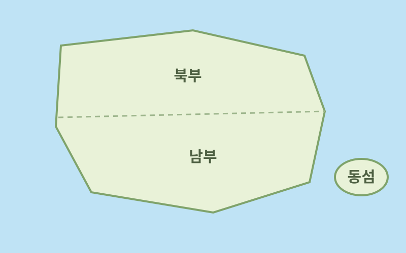
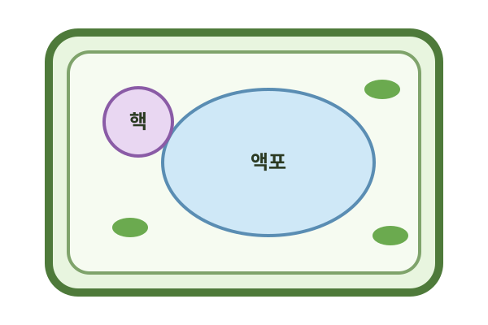

그림을 못 넣은 AI가 남긴 자리
원본 PPT를 이 화면에 끌어다 놓으면 번호대로 채워진다.
손 모드에서 그림을 누르면 다른 그림으로 바꿀 수 있다.
class-html · M2 부품 예시
모든 내용과 그림은 이 저장소에서 직접 만들었다.
펜을 든 채로 단추·막대·카드를 조작해 보자.
막대를 움직이거나 → 를 눌러 한 단계씩 열어 보자.
햇빛을 받은 물이 수증기가 되어 올라간다.
수증기가 높은 곳에서 식으면 작은 물방울이 된다.
물방울이 모여 구름이 된다.
물방울이 커지면 비나 눈이 되어 내린다.
땅에 내린 물은 강과 지하수가 되어 바다로 돌아간다.
| 움직이는 것 | 용질(물에 녹은 물질) |
|---|---|
| 방향 | 농도가 높은 곳 → 낮은 곳 |
| 예 | 향수 냄새가 방 안에 퍼진다. |
| 움직이는 것 | 물(용매) |
|---|---|
| 방향 | 용액 농도가 낮은 쪽 → 높은 쪽 |
| 예 | 배추를 소금에 절이면 숨이 죽는다. |

1단계
북부의 작은 나라들이
먼저 하나로 뭉쳤다.
2단계
북부가 남부를 합쳐
큰 섬이 하나가 되었다.
3단계
동섬이 마지막으로 합류해
통일을 마쳤다.
카드를 끌거나, 카드를 누른 뒤 칸을 눌러 옮겨 보자.
물질이 농도가 높은 곳에서 낮은 곳으로
퍼져 나가는 현상은?
확산: 높은 농도 → 낮은 농도, 에너지를 쓰지 않는다.
세포가 에너지(ATP)를 쓰는 이동을 모두 고르자.
세포의 상대적 부피
원형질 분리: 팽압이 0이다.
물을 흡수하는 중: 팽압이 커지며
흡수력이 줄어든다.
최대 팽윤: 흡수력이 0이다.
오른쪽 설탕
설탕은 반투과성 막을 지나지 못한다.
물은 설탕물 쪽으로 더 많이 모인다.
입자 수와 움직임은 설명을 위한 모형이다.
가상의 나라 「바다국」의 선거법: 1920년에는 남자 21세·여자 30세,
1930년에는 모두 21세부터 투표할 수 있다.
나이

액포
원본 PPT를 이 화면에 끌어다 놓으면 번호대로 채워진다.
손 모드에서 그림을 누르면 다른 그림으로 바꿀 수 있다.